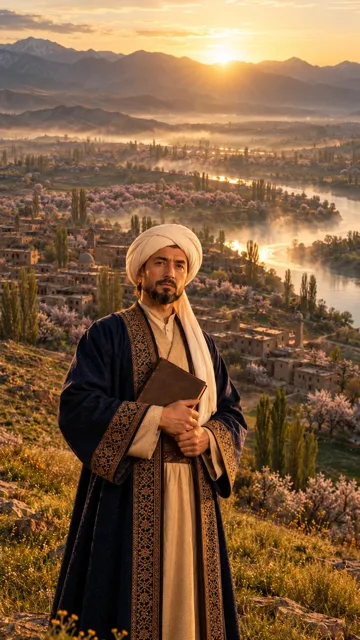

Ibn Sino
9:16 (tik), 8 s📎 Veo'ga boshlang'ich kadr qilib shu rasmni yuklang

🎬 Video prompt (Veo, rasm → video)
Vertical 9:16, 8 seconds. Camera: a slow steady push-in from the knees-up framing to a close-up of his head and shoulders (0 to 5 s), then at about 6 s a fast whip pan to the right with strong motion blur, the clip ends inside the blur of golden valley light. Action: Ibn Sina stands still on the hilltop, holding his book against his chest, looking straight into the camera with a calm kind look. At about 4.5 s he slowly turns his head to the right side of the frame and looks to the right, as if passing his gaze to the next hero, and the camera follows his look with the whip pan. His robe moves gently in the morning wind, mist drifts slowly over the river below, the sun glows behind the mountains. Keep Ibn Sina exactly as in the image for the whole clip: the same face, full dark black beard, white turban with a long tail, dark blue robe with gold border, brown book. Keep the background exactly as in the image. No new people, no extra objects, no text, no captions, no watermark. Realistic cinematic film look.